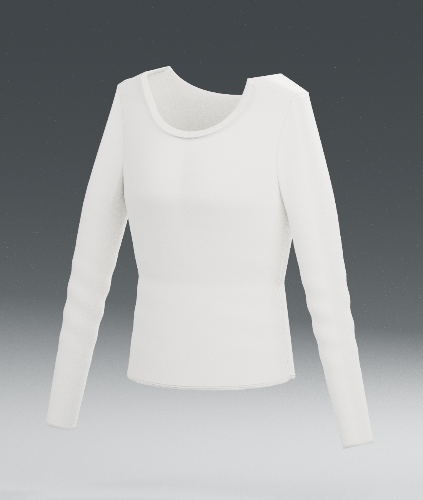

女士紧身
长袖上衣原型
圆领、收腰、细长袖。
从原始中码纸样，重建可以查看的三维轮廓。
当前为外观示意，合身性尚未验证。
下载完整资料包原始文件、可编辑模型、渲染图与重现脚本
- 纸样尺码
- 中码
- 三维重建
- Blender
- 物理试穿
- 未验证

拖动旋转 · 滚轮缩放 · 方向键旋转
根据纸样轮廓重建。暖白材质、人体厚度和姿态为展示假定。
原始纸样保留参数化外观重建 · 非校准布料仿真生产与实体试穿未批准
先确认面料，再判断贴身程度。
两份材料资料存在差异，尚未确定最终使用哪一种。
| 项目 | 实体色卡 | 资料表红框行 |
|---|---|---|
| 主要纤维 | 棉95.5% | 粘胶90% |
| 氨纶 | 4.5% | 10% |
| 克重 | 155克／平方米 | 疑似280克／平方米 |
| 实用幅宽 | 175厘米 | 疑似175厘米 |
这组模型能说明什么
前后身采用原纸样内侧轮廓，袖窿和袖身宽度参考原裁片。肩缝、侧缝和领条进行了展示用连接。
它可以帮助查看款式和三维轮廓，但不能确认真实弹性、压力、缩水、接缝质量或人体合身性。
查看纸样与规格的待确认问题
原始工程文件尚未完整解码；裁剪文件单位未声明；后身标注数量为2；衣长测量起点及公差写法存在歧义。历史实验的几何失败仍独立保留，本页面没有覆盖这些记录。
展开八个尺码的成衣规格
单位：厘米。中码为基码。以下为资料中的目标值，不是人体尺寸，也未逐项确认与裁剪纸样一致。
| 部位 | 加小码 | 小码 | 中码 | 大码 | 加大码 | 二加大码 | 三加大码 | 四加大码 |
|---|
从查看，继续到修改。
可下载原始文件，也可在本地重现全部渲染。
完整开发资料包原始文件 · 脚本 · 模型 · 图片 · 说明↓可编辑三维场景模型、材质、灯光和相机↓通用三维模型供兼容三维查看器打开↓款式与文件说明三个文件、七张参考图、尺寸及待确认事项↓文件校验清单来源范围与文件摘要↓


本次未修改原始纸样。完整资料包保留未成功的工程文件解码调查，避免把探索脚本误认为可用的格式转换器。